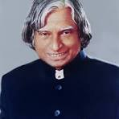

Avul Pakir Jainulabdeen Abdul Kalam was an Indian aerospace scientist and statesman.
who served as the president of India from 2002 to 2007.
Born and raised in a Muslim family in Rameswaram, Tamil Nadu, Kalam studied physics and aerospace engineering.
He spent the next four decades as a scientist and science administrator, mainly at the Defence Research and Development
Organisation (DRDO) and Indian Space Research Organisation (ISRO) and was intimately involved in India's civilian space
programme and military missile development efforts. He was known as the "Missile Man of India" for his work on the
development of ballistic missile and launch vehicle technology.
He also played a pivotal organisational, technical, and political role in Pokhran-II nuclear tests in 1998,
India's second such test after the first test in 1974.
Kalam was elected as the president of India in 2002 with the support of both the ruling Bharatiya Janata Party
and the then-opposition Indian National Congress. He was widely referred to as the "People's President".
He engaged in teaching, writing and public service after his presidency. He was a recipient of several awards,
including the Bharat Ratna, India's highest civilian honour.
While delivering a lecture at IIM Shillong, Kalam collapsed and died from an apparent cardiac arrest on 27 July 2015,
aged 83. Thousands attended the funeral ceremony held in his hometown of Rameswaram, where he was buried with full state
honours. A memorial was inaugurated near his home town in 2017.
Avul Pakir Jainulabdeen Abdul Kalam was born on 15 October 1931 to a Tamil Muslim family in the pilgrimage center
of Rameswaram on Pamban Island, Madras Presidency (now in the Indian state of Tamil Nadu). His father,
Jainulabdeen Marakayar, was a boat owner and imam of a local mosque, and his mother, Ashiamma, was a housewife.
His father owned a boat that ferried Hindu pilgrims between Rameswaram and Dhanushkodi.
Avul Pakir Jainulabdeen Abdul Kalam was born on 15 October 1931 to a Tamil Muslim family in the pilgrimage center
of Rameswaram on Pamban Island, Madras Presidency (now in the Indian state of Tamil Nadu). His father, Jainulabdeen Marakayar,
was a boat owner and imam of a local mosque, and his mother, Ashiamma, was a housewife. His father owned a boat that ferried
Hindu pilgrims between Rameswaram and Dhanushkodi.
